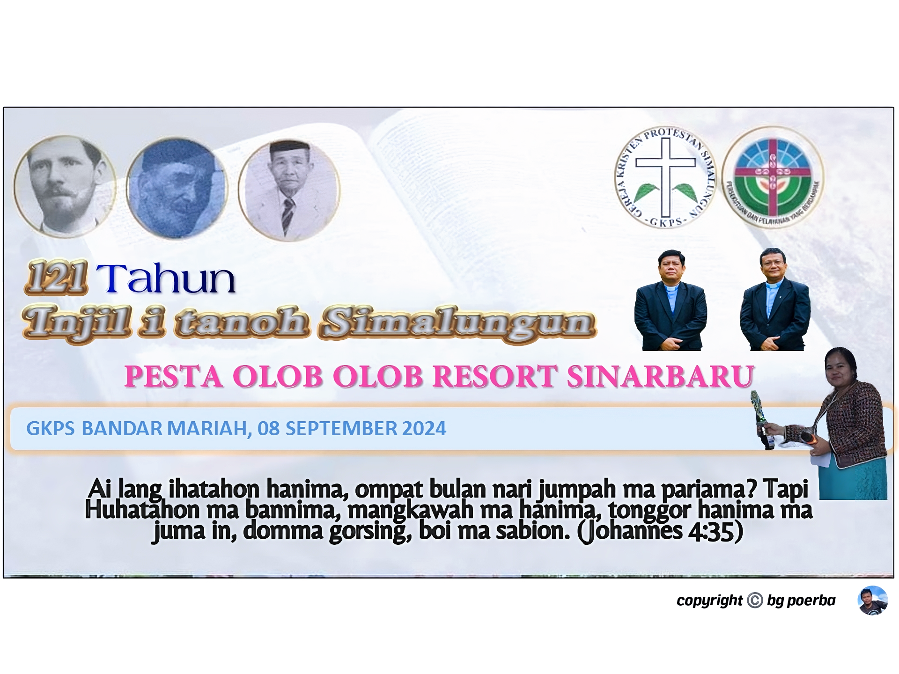
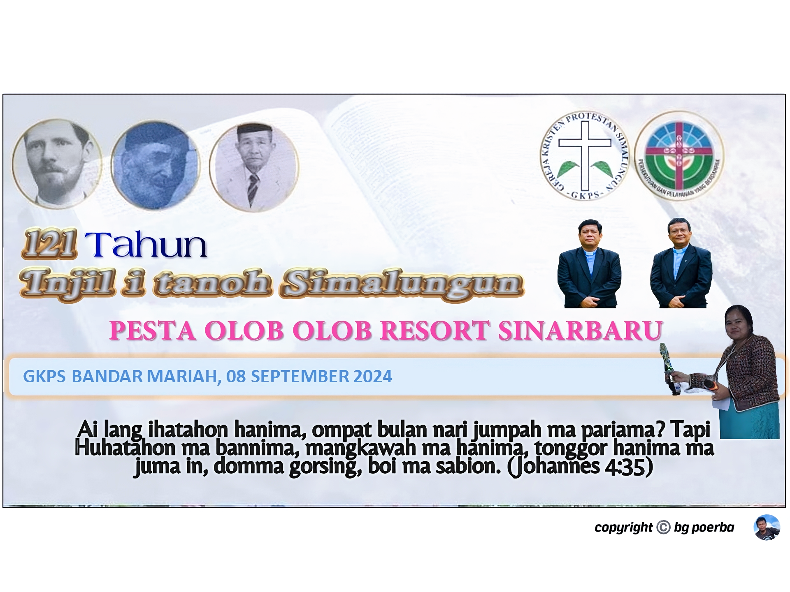
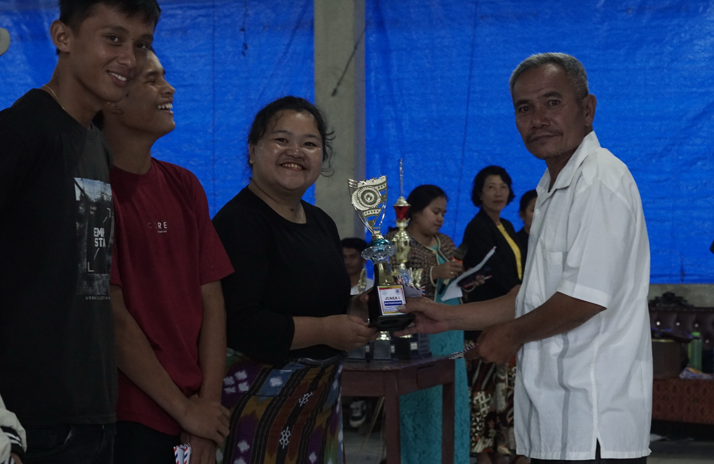
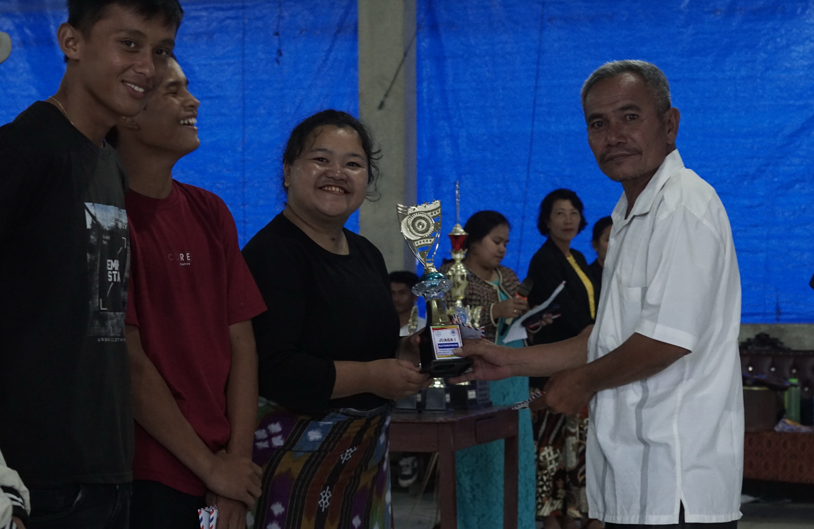
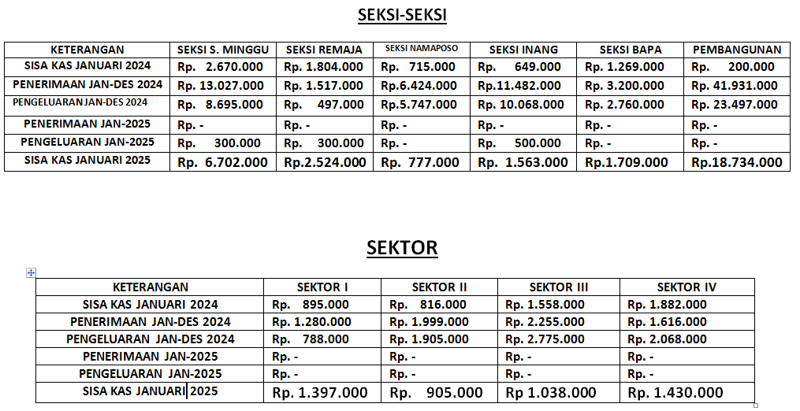
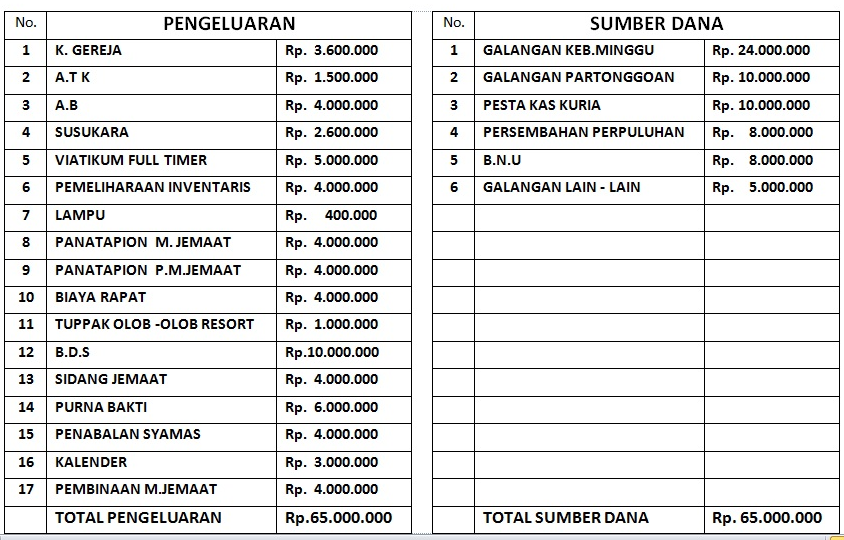

Periodesasi PMJ 2024-2025


Puji syukur kita ucapkan Tuhan, telah terlaksananya kegiatan periodesasi PMJ GKPS Sinar Baru untuk masa bakti tahun 2025-2030. Berita ini sangat menarik dan informatif. semua kegiatan pemilihan berjalan dengan baik .Tuhan memberkati kita semua.
Pesta Olob Olob di Resort
 

Puji syukur kita ucapkan Tuhan, ini adalah isi berita pertama. Berita ini sangat menarik dan informatif. kegiatan ini dilaksanakan di GKPS Bandar Mariah,pada Tgl 08 september 2024, semua kegiatan berjalan dengan baik,dan Tuhan memberkati kita semua.
Porseni Namaposo Resort Sinar Baru
 

Puji dan Syukur kita ucapkan kepada Tuhan kita Yesus Kristus,dalam hal kegiatan ini namaposo Sinar Baru ikut serta dalam mengikuti setiap rangkaian acara, sehingga berjalan dengan baik semua kegiatan. Porseni namaposo dilaksanakan yang sebagai tuan rumah GKPS Bandar Mariah
Profil
| Sejarah GKPS Sinar Baru |
|---|
| Pada mulanya jemaat Sinar Baru mengadakan kebaktian minggu di gereja GKPS desa Purba Sinombah dengan jarak tempuh lebih kurang 2 km Karena jauhnya jarak tempuh untuk beribadah ke gereja GKPS yang berada di desa Purba Sinombah maka tumbuhlah suatu keinginan dikemudian hari untuk mendirikan gereja baru.Dahulunya jemaat bertempat tinggal di Desa Bagotlingga yang sekarang dikenang dengan nama Huta Lama,dikemudian hari masyarakat Bagotlingga berpindah huta ketempat yang baru dan menamakannya Desa Sinar Baru yang berartikan "Kampung yang Baru dan Bersinar" setelah ada musyawarah yang mencapai mufakat bersama dirikanlah sebuah bangunan gereja GKPS Sinar Baru dengan swadaya jemaat itu sendiri di desa Sinar Baru pada tahun tgl 23 maret 1983 dengan resort Saribudolok distrik 3 |
| Tema |
|---|
| "TEMA sinode GKPS tahun 2024 "Hasadaon pakon pangidangion namarbuah" |
| Sub Tema |
|---|
| "Pataridahkon hita ma hasirsironta pasaudkon hadoharon pakon hadameion i tongah tongahni masyarakat ampa negara maronjolan bani hapintoran ampa hasintongan" |
Jadwal Ibadah
| Kebaktian | Hari | Waktu Masuk |
|---|---|---|
| Minggu umum | Minggu | Pkl 10 : 00 Wib |
| Sekolah Minggu | Minggu | Pkl 08 : 30 Wib |
| PA Sektor | Kamis Malam | Pkl 20 : 30 Wib |
| PA Inang | Minggu Sore | Pkl 15 : 00 Wib |
| PA Bapa | - | - |
| Pa Namaposo | Jumat Malam | Pkl 20 : 30 Wib |
| PA Remaja | Sabtu Malam | Pkl 20 : 30 Wib |
| PA Sekolah Minggu | - | - |
| Parsermonan | Minggu Sore | Pkl 14 : 00 Wib |
Struktur Kepengurusan
| Jabatan | Nama | Masa Periode |
|---|---|---|
| Pendeta Resort | Pdt. Kiki Elisa Purba S.Th | 2025-2030 |
| Porhanger | St. Wardiahman Purba | 2025-2030 |
| Wakil Porhanger | St.Bekson Sipakkar | 2025-2030 |
| Sekretaris | St.Jan Predi Sumbayak | 2025-2030 |
| Bendahara | St.Remika Pitta Omas Purba | 2025-2030 |
| Sektor | Ketua | Bendahara | Sekretaris |
|---|---|---|---|
| Sektor I | Joko | ..... | .... |
| Sektor II | Joko | ..... | .... |
| Sektor III | Joko | ..... | .... |
| Sektor IV | Joko | ..... | .... |
| Jabatan | Nama | Masa Periode |
|---|---|---|
| Ketua | Rudi | 2021-2023 |
| Wakil Ketua | Nia | 2021-2023 |
| Sekretaris | Dewa | 2021-2023 |
| Wakil Sekretaris | Sari | 2021-2023 |
| Bendahara | Agus | 2021-2023 |
| Pembimbing | ---- | 2025-2030 |
| Jabatan | Nama | Masa Periode |
|---|---|---|
| Ketua | Elpideria Sipayung | 2025-2030 |
| Wakil Ketua | Imelda Munthe | 2025-2030 |
| Sekretaris | Selnita R.Sagala | 2025-2030 |
| Wakil Sekretaris | Tiurma Sipayung | 2025-2030 |
| Bendahara | Selmariana Pandiangan | 2025-2030 |
| Kordinator I | Hernawati saragih | 2025-2030 |
| Kordinator II | Martalena Hutajulu | 2025-2030 |
| Kordinator III | Rodiani Marliani Simarmata | 2025-2030 |
| Kordinator IV | Lesmaria Purba | 2025-2030 |
| Pembimbing | ---- | 2025-2030 |
| Jabatan | Nama | Masa Periode |
|---|---|---|
| Ketua | Riandi Girsang | 2023-2026 |
| Wakil Ketua | Jeksonsius Purba | 2023-2026 |
| Sekretaris | Clara purba | 2023-2026 |
| Wakil Sekretaris | 2023-2026 | |
| Bendahara | Yessi Purba | 2023-2026 |
| Pembimbing | St.Murdiahman Purba | 2025-2030 |
| Jabatan | Nama | Masa Periode |
|---|---|---|
| Ketua | Rudi | 2021-2023 |
| Wakil Ketua | Nia | 2021-2023 |
| Sekretaris | Dewa | 2021-2023 |
| Wakil Sekretaris | Sari | 2021-2023 |
| Bendahara | Agus | 2021-2023 |
| Pembimbing | ---- | 2025-2030 |
| Jabatan | Nama | Masa Periode |
|---|---|---|
| Ketua | Ernitio Saragih | 2025-2030 |
| Wakil Ketua | Viceria Purba | 2025-2030 |
| Sekretaris | Nelly Purba | 2025-2030 |
| Wakil Sekretaris | csy. Lorida Purba | 2025-2030 |
| Bendahara | Elvi Sarianna Sinaga | 2025-2030 |
| Anggota I | Csy. Harjono Purba | 2025-2030 |
| Anggota II | Csy. Anggie Cristinesha Purba | 2025-2030 |
| Anggota III | Tasya Tiorulina Saragih | 2025-2030 |
| Pembimbing | ---- | 2025-2030 |
| Jabatan | Masa Periode | |
|---|---|---|
| Ketua | Sari | 2023-2025 |
| Wakil Ketua | Agus | 2023-2025 |
| Sekretaris | Dewi | 2023-2025 |
| Wakil Sekretaris | Doni | 2023-2025 |
| Bendahara | Yuni | 2023-2025 |
| Pembimbing | ---- | 2025-2030 |
KEUANGAN SEKSI-SEKSI
ANGGARAN PENGELUARAN DAN SUMBER DANA TAHUN 2025
I. Bidang Persekutuan
A. Ibadah Minggu
- Ase boi ma i bahen hita parmasuk kebaktian minggu tepat waktu jam 10 : 00 wib, sonai homa age majelis namagidangi ase hadir ma 15 menit sebelum jam 10 : 00 wib
- Hubani kuria na adong keperluan hu gareja boi do i setor hubani sekretaris jemaat ( hu rumah ) sebelum hari minggu ase boi homi acara kebaktianta, janah anggo i gareja ase roh ma sebelum kebaktian.
- Hubani bapa pakon inang/ namaposo ase ulang marsigaret atap pe marsuttil i bagas ruangan ni gareja.
- Jaga hita ma kebersihan ni gereja on, ase membuang sampah itempat sampah na domma i sediahon
- Ase majelis mengambil tempat i lobei,waktu kebaktian minggu
- Pembagian galangan sesuai dengan pos ni
B. Partonggoan
- Bani tahun 2025 on ase totap ma i lanjutkon hita tukar mimbar bani pengurus sektor na iadongkon bani bulan juni pakon september,janah PMJ bani bulan november.
- Masuk partonggoan ase iseragam hon hita ma masuk jam 20:30 wib.
- Sipartugas ase i horjahon ma horjani
- Ibahen ma partonggoan juma tanganan aima bani pra paskah pakon olob olob
II. Sakramen
- Bani tahun 2025 on ase totap ma i lanjutkon hita tukar mimbar bani pengurus sektor na iadongkon bani bulan juni pakon september,janah PMJ bani bulan november.
- Masuk partonggoan ase iseragam hon hita ma masuk jam 20:30 wib.
- Sipartugas ase i horjahon ma horjani
- Ibahen ma partongoan juma tanganan aima bani pra paskah pakon olob olob
III. Pelayanan
- Bani tahun on ase hubani haganup majelis lang pe martugas wajib berpakaian rapi, anggo bapa marjas pakon mardasi,anggo inang mar kebaya pakon sanggul
- Setiap majelis namangidangi bani kebaktian minggu wajib pakai jubah
- Totap do i bahen hita pembagian bibit untuk kuria aima na iadongkon bani bulan agustus pakon oktober
- Totap do i aktifkon hita minggu minggu kategorial
- Bani tahun on i bahen hita do purna bakti hubani sintua na dob marumur 65 tahun
- Bani tahun 2025 on ase i bahen hita ma laporan keuangan yang lebih valid janah boi i laporkon setiap minggu/sebagai warta gereja
IV. Kesaksian
- Bani tahun on porluma i perjelas hita tugas sebagi majelis anggo sintua sebagai sintua ma,anggo syamas sebagai syamas ma
- Totap ma i anggarhon hita aksi kasih hubani orang tua na lansia,namabalu,difabel,pakon natading maetek
- Bani bulan Mei iadongkon do KPI distrik III ikuria ta on
- Ase i aktifkon hita ma pengabsenan jumlah kuria na hadir bani kebaktian minggu
- Bani tahun 2025 on iadongkon do penabalan syamas produk 2020
- Bani minggu pesta Namaposo ase namaposo ma na mangidangi (tgl 26 desember)
- Hubani ni Namaposo na sihol marhajabuan wajib mambuat surat
V. Kategorial
1. Sekolah Minggu
- Kebaktian sekolah minggu ase masuk tepat jam 08 :00 wib
- Hubani orang tua ase iojur ma niombahni untuk mengikuti kegiatan sekolah minggu
- Porluma i bahen roster na mangidangi bani guru sekolah minggu
- Porluma ijaga kebersamaan / kekompakan pengurus sekolah minggu pakon guru S.minggu
- Kebersihan ruang gereja porlu iperhatihon setelah selesai kebaktian sekolah minggu
2. Remaja
- Porlu ma ibahen 1 wadah na inaungi gereja pakon pemerintah setempat untuk menjaga kenakalan remaja
- Remaja na domma kelas 1 SMA boi do mangikuti parguruan hassi pe lang manaksihon bani tahun on
3. Namaposo
- Bani tahun on ase itingkatkon ma hasadaon ase taridah bahwasni namaposo aima bunga bunga ni gereja, janah ulang minum tuak lobei ase lao partonggoan
- Ase i bentuk ma song leader hubani namaposo, ase lambin roh hidupni pandodingon bani kebaktian minggu
4. Inang
- Totap ma mardalan PA inang songon tahun tahun na salpu
- Hubani inang ase i ojur ma bapa irumah nalaho mandihuti kebaktian minggu/kegiatan gereja
- Bani minggu inang ase totap ma seksi inang na mangidangi
- Hubani inang na lang ongga roh mandihuti PA bani Tahun nasalpu ase i paroro ma uhur na bei
5. Bapa
- Bani tahun 2025 on ase i aktifkon kembali ma kepengurusan ni bapa ase boi mardalan partonggoan seksi bapa
- Ipukkah hita bapa ma bani tahun 2025 on lobei marminggu ase i horjahon hita kegiatanta nalegan
6. Sektor
- Ase i bahen hita ma sektor sebagai perpanjangan tangan ni gereja laho mendukung kegiatan ni kuria sonai age i resort
VI. Sektor
- Setiap majelis wajib mangihuti parsermonan,tarlobih hubani majelis namangidangi bani kebaktian minggu sonai age bani partonggoan
- Totap ma i lanjutkon hita parsermonan i kuriatta on
- Parsermonan iadongkon dob selesai ibadah minggu, ianan i gereja panorang jam 14:00
VII. Pembangunan
- Bani tahun on das ma hape usia ni garejatta 42 tahun
- I upayahon hita ma bani tahun on manambah ruangan untuk ruang parhobasan
- I bahen ma inventaris jubah pangidangion 3 helai
- I upayahon hita ma untuk tahun 2025 paratahon tanah belakang gereja
- Itempah ma sada tempat lilin untuk natal,podium kecil, tempat agenda,pakon kelengkapan ni sound system
VIII. Tambahan
- Bani tahun 2024 adong tambah kuriatta aima 4 kk, janah 2 kk na kaluar
- Jadi jumlah kk tahun 2025 berjumlah 143 kk,122 kk tangga baggal 21 kk tangga etek